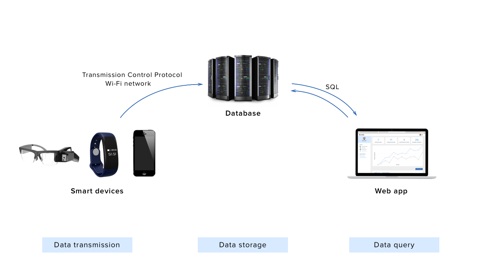

– –
Process

A UX Research and Design mastery partner project that took place over a span of 3 months (Sept—Dec 2017). The project demonstrates knowledge in understanding and application of UX research methods, analysis and synthesis of research data, and iteration of designs through informed decisions.
Individuals with Autism Spectrum Disorder (ASD) struggle with social interactions, communication, and sensory processing. The disorder complicates daily life and causes financial strain. As of 2015, 1 in 45 children between the ages of 3—17 were diagnosed.
Below highlights the research + design process and a proposed system aimed to provide hassle-free longitudinal monitoring and documentation.
Access a simple Framer prototype HERE
My peers and I entered a proposal for Games User Research Summit 2017 on a wearable system involving haptic feedback that will promote interactions between special needs children and an open form of communication between parents and their [hypo-sensitive] children. We spent our spring break that year in San Francisco sharing our vision of providing parents a glimps of their children's lives through a poster presentation and engaging with GUR Summit attendees.
**This project is a continuation of that vision.
“It’s also just encouraging, at least for me, to see any improvement… it’s just plain encouraging, even if it’s not going to change his life that he does X, I love to hear that.”
Survey
Interviews
Literature Reviews
Generated from 7 surveys from parents, 2 expert interviews, and 9+ literature reviews
A list of design objectives
A closer look at the dashboard homepage

Quick features / architecture guide
A high-level look of components and architecture necessary for the system to function
Learn about the system and how it can be incorporated in your everyday life